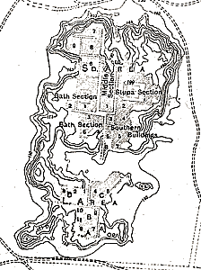

The CitadelAt the western end of the city is an area known as the Citadel. This area of the city was built on top of a mound of bricks almost twelve metres high. A large staircase was built up the side of this mound.Archaeologists divided the Citadel into two areas while they were excavating. Click on the plan below to explore these two areas. 
More about the Citadel. |